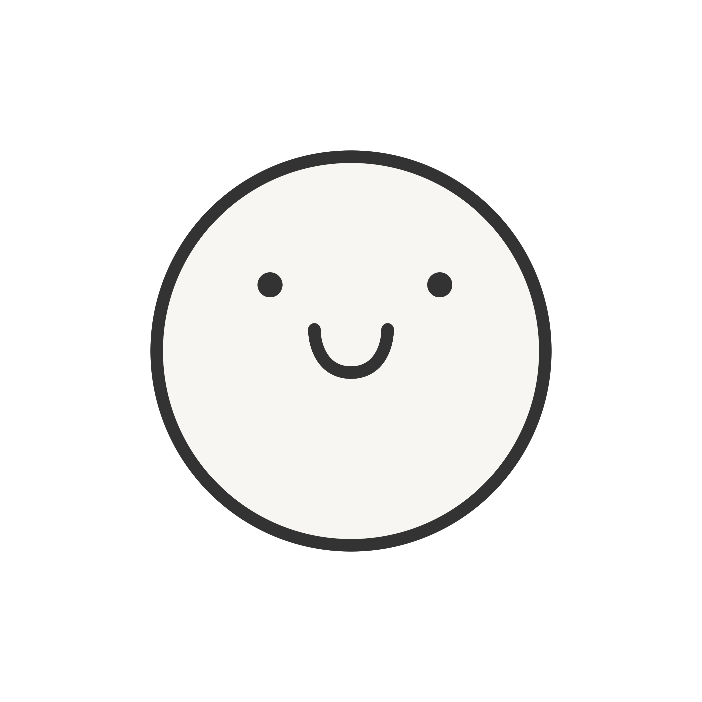

ABOUT ME
Hello again, I'm Cassidy

A
I'm a designer and creative based in Los Angeles.
As a UX designer with a background in Cognitive Science and a minor in Digital Humanities from UCLA, my passion lies in crafting user-centered experiences that seamlessly blend human behavior and technology. Along with my Specialization in Computation, I bring a unique perspective to design, psychology, and technology. I understand human cognition, perception, and decision-making, enabling me to create intuitive interfaces that align with user tendencies. My knowledge of digital humanities allows me to incorporate empathy, storytelling, and cultural context, crafting experiences that resonate on a deeper level. By merging my academic background with practical UX design experience, I hope to bridge the gap between user needs and technological possibilities and make meaningful digital spaces.